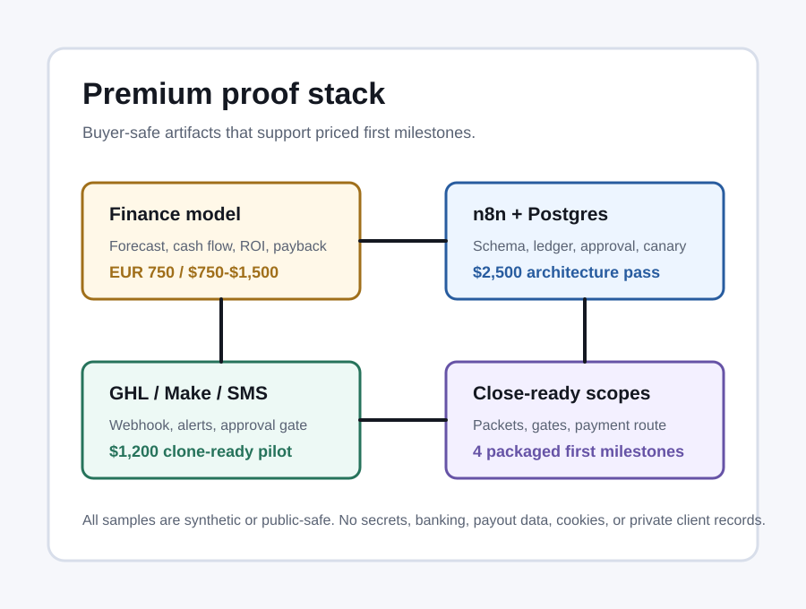

One README, install guide, API snippet, GitHub issue handoff, SOP, or technical note cleanup through Freelancer escrow.
Scoped paid starts
Workflow repair, reporting cleanup, and investor-ready numbers with proof before expansion.
Fixed-scope first milestones for broken lead routes, messy spreadsheets, n8n/Make/Zapier flows, CRM handoffs, reporting loops, business plans, and financial models.
$15-$175 starter slices
$15 README / docs cleanup
$25 GitHub / CI review
GitHub / CI proof
$75 24-hour spreadsheet cleanup
PDF to spreadsheet proof
$95 form dashboard handoff
$95 24-hour Freelancer service
Form to dashboard proof
$250 48-hour landing page
$300 business plan review
$500 workflow build
Business plan via Upwork
Spreadsheet report via Upwork
Outlook quote proof
Meeting notes to Planner proof
Webhook to quote proof
$500 fraud decision review
Security review scope
Healthcare API proof
GitHub profile
Tutorial samples
Profile snapshot
View proof assets

Starter slices
Smaller paid starts for buyers who want proof before a bigger package.
The premium catalog remains available, but a first milestone can be smaller when the scope is narrow, async, and easy to verify. These are designed for fast trust-building work, not unpaid discovery calls.
One public or buyer-authorized repo issue, failing test, GitHub Actions run, dependency blocker, or install/README problem through Freelancer escrow.
One focused CSV, Excel, Sheets, PDF table, lead-list, order, invoice, or weekly KPI report pass through Freelancer escrow.
One form, sheet, calendar, alert, dashboard, or Monday.com handoff repair through Freelancer escrow.
One scoped repair through Freelancer escrow.
Small webhook, Zapier/Make/n8n, formula, or report cleanup.
Mini model, cleaned file, scoped workflow slice, 48-hour landing page, or handoff doc.
One focused plan, lender, grant, pitch, or model slice through Freelancer escrow.
Marketplace services
Fund a fixed-scope start through marketplace escrow.
Eight Freelancer services are live for docs, GitHub/CI, spreadsheet, form/dashboard, report, workflow, website/form, and business-plan starts, and two Upwork Project Catalog services are live for larger fixed packages. Use the smallest funded scope that matches the work. The catalog prices are package anchors, not a minimum.
24-hour README or install docs cleanup
$15 via Freelancer
24-hour GitHub issue or CI fix review
$25 via Freelancer
24-hour spreadsheet cleanup + KPI report
$75 via Freelancer
24-hour form dashboard handoff
$95 via Freelancer
24-hour workflow or report repair
$95 via Freelancer
48-hour landing page + contact form
$250 via Freelancer
24-hour business plan or forecast review
$300 via Freelancer
48-hour workflow build or repair
$500 via Freelancer
Business plan + financial model
$500 / $1,500 / $3,500
Spreadsheet cleanup + KPI report
$40 / $99 / $400
$15+
clean async starter slices
9
medical-ops schema tables
31
healthcare API field mappings
2027
sample break-even year
No-attachment snapshot
Business, systems, data, and workflow implementation.
Useful for reviewers who want a fast signal without downloading files: business planning and financial modeling, Python and TypeScript product work, API and workflow integrations, reporting cleanup, decision-testing boundaries, and operational proof artifacts.
- Starter slices from $15-$300 when the buyer needs quick proof before a larger package.
- Premium fixed-scope milestones from $300 to $3,500+ when the scope is already clear; $300+ is not a universal floor.
- Python, JavaScript/TypeScript, APIs, Postgres, dashboards, and workflow systems.
- Business plans, financial forecasts, investor/lender packages, and KPI reporting.
- PDF and document tables converted into spreadsheet-ready rows with review queues.
- n8n, Make, Zapier, CRM handoffs, approval gates, run logs, and handoff notes.
- Security reviews: untrusted-input screening, test traces, and tool-boundary design.
- Capability CV PDF for forms that require a resume link.
Workflow repair
Fix the first broken handoff.
Google Forms to Sheets, Drive, Calendar, Teams, CRM owner alerts, failed webhooks, duplicate leads, brittle n8n/Make/Zapier steps, and unclear run logs.
- Start
- $95-$1,500
- Output
- Working slice, run log, handoff note
- Timing
- 24 hours for one clean scope
Financial model
Investor and lender package.
Business plan, assumptions, forecast, KPIs, break-even, payback, cash flow, charts, and source-backed market logic.
- Start
- $175-$3,500
- Proof
- Forecast + investor brief
- Timing
- 24 hours for one focused review
Data cleanup
Clean spreadsheet plus repeatable KPI report.
CSV, Excel, PDF tables, Google Sheets, exports, duplicates, missing fields, formulas, normalization, and weekly management reporting.
- Start
- $75-$500
- Buy
- Use Upwork
- Output
- Clean file + report notes
Platform architecture
n8n + Postgres architecture pass.
Source of truth, tenant isolation, approval states, canary checks, workflow contracts, run ledger, and acceptance gates.
- Start
- $2,500
- Output
- Schema, contracts, canary spec
- Next
- Build quote after brief
API integration
Healthcare workflow API and OAuth2 sprint.
Keragon, EHR, claims, call-tracking, internal app, and workflow API integration with short-lived token handling, field mapping, retries, idempotency, and handoff docs.
- Start
- $1,500-$3,500
- Build
- $3,500-$9,000+
- Proof
- 7 synthetic events, 31 mappings
Security review
Untrusted-input and tool-boundary audit.
Review support, intake, search-backed, and workflow systems for unsafe tool access, untrusted-input paths, data exposure, weak tests, and missing approval gates.
- Start
- $175-$2,500
- Scope
- View packages
- Output
- Findings, fixes, and retest notes
1
Lock Scope
Define the buyer objective, source system, inputs, failure case, and acceptance gate.
2
Build Slice
Fix or model one real path using sample-safe data, logs, and visible assumptions.
3
Show Proof
Deliver the output, handled failures, and short handoff note.
4
Quote Next
Price the next milestone from evidence instead of guesswork.
Written tutorial samples
Technical workflows explained for operators and builders.
These short samples show the style used for SaaS walkthroughs: plain-language outcome, system map, setup steps, acceptance checks, and handoff notes.
GitHub issue and CI fix review
Turn a failing check, install error, dependency blocker, or docs gap into a small repair plan.
Google Forms to dashboard workflow
Route form rows, files, calendar work, team alerts, and KPI status without messy handoffs.
Monday.com webhook to quote handoff
Turn email, form, and webhook events into quote-ready records with owner alerts.
Outlook product inquiry to quote draft
Turn product inquiry emails into quote records, filled templates, draft replies, and review queues.
Meeting notes to Planner task handoff
Turn meeting summaries into task rows with owners, due dates, source links, and review checks.
Webhook callback lead routing
Explain a callback handoff flow to a non-technical operator.
n8n email triage workflow
Turn support inbox messages into labeled records and review queues.
Make SMS approval run log
Keep outbound SMS gated by approval state, event IDs, and audit rows.
Proof Assets
Finance model proofForecast, break-even, cash flow, assumptions, investor/lender brief.
n8n + Postgres proofSchema map, approval states, canary contract, acceptance gate.
Healthcare API proofOAuth2 token strategy, synthetic events, field mapping, idempotency, retry and handoff checks.
GHL / Make / SMS proofScenario blueprint, sample events, run log, approval gating.
GitHub / CI proofRepo issue, failing command, dependency mismatch, acceptance command, and repair handoff note.
Form to dashboard proofGoogle Forms, Sheets, Drive, Calendar, Teams, dashboard status, duplicate handling, and run-log checks.
PDF to spreadsheet proofDocument IDs, page references, line items, totals, missing-field review, and CSV-ready rows.
Outlook quote proofMicrosoft 365 inquiry folder, quote fields, quotation template, draft reply, review queue, and run-log checks.
Meeting notes proofPlanner-ready task rows, owners, due dates, duplicate update handling, review queue, and run-log checks.
Workflow repair proofSample payloads, validation scripts, error paths, handoff docs.
Security proofUntrusted-input tests, tool-boundary review, test gaps, mitigation plan.
Payment routing
Marketplace escrow first. Direct checkout only after scope approval.
Marketplace-originated work should use marketplace escrow or a funded milestone. Direct hosted checkout is reserved for buyer-approved scopes after the deliverable, timing, and acceptance gate are agreed.
- $30 Workflow diagnostic - checkout issued after written scope approval.
- $50 Data cleanup + report - checkout issued after written scope approval.
- $95 n8n repair first pass - checkout issued after written scope approval.
- $300 48-hour workflow repair - checkout issued after written scope approval.
- $500 Website form + lead routing - checkout issued after written scope approval.
- $1,500 Monthly ops support - checkout issued after written scope approval.